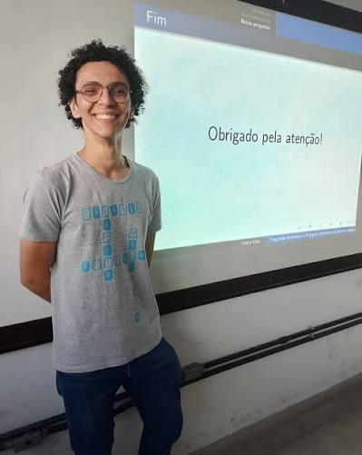

Orientação acadêmica
Orientandos
Mestrado e doutorado · Programa de Pós-Graduação em Matemática · UFPE
Orientandos atuais

MestradoPedro Henrique Sales Vital
Tema de pesquisa
Estabilidade de Subvariedades Mínimas em Esferas Riemannianas Conformes à Esfera Redonda
2026 – presente · UFPE
Bolsa FACEPE
Antônio Janael de Sousa Macedo
Tema de pesquisa
A definir
2026 – presente · UFPE
Bolsa CNPq
 Doutorado
DoutoradoLucas de Oliveira Rodrigues
Tema de pesquisa
A definir
2026 – presente · UFPE
Bolsa CAPES
Orientações concluídas
Nenhuma orientação concluída registrada até o momento.